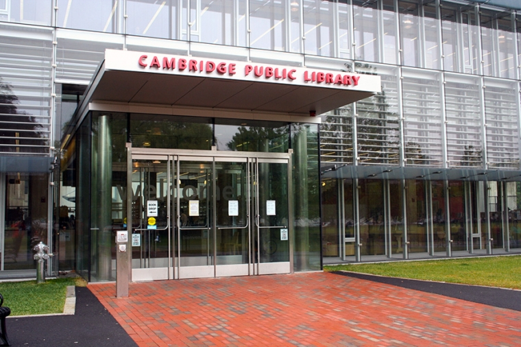
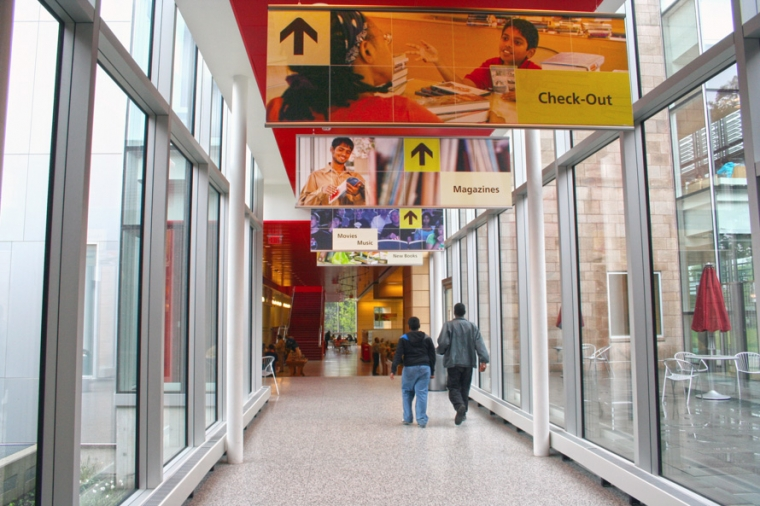
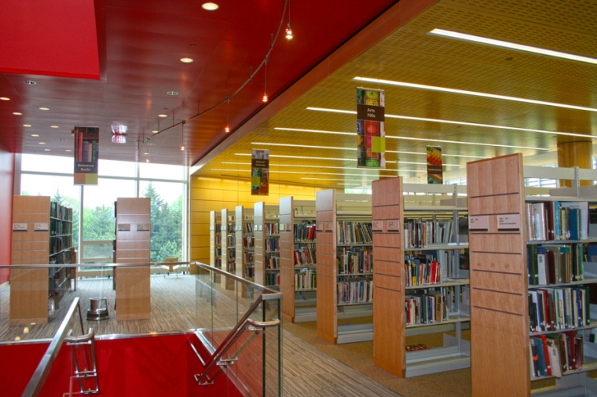
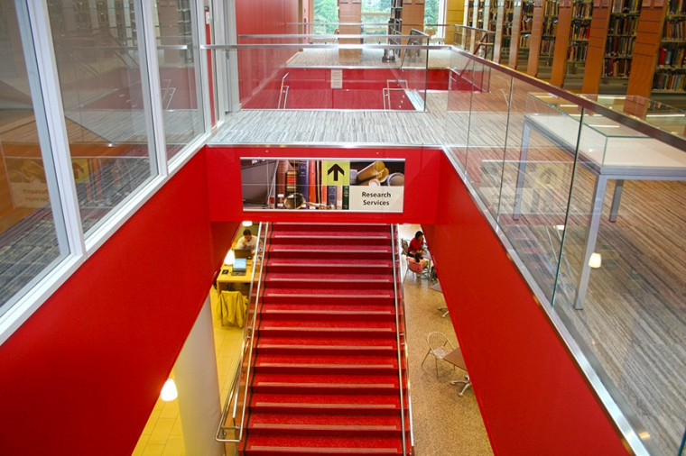
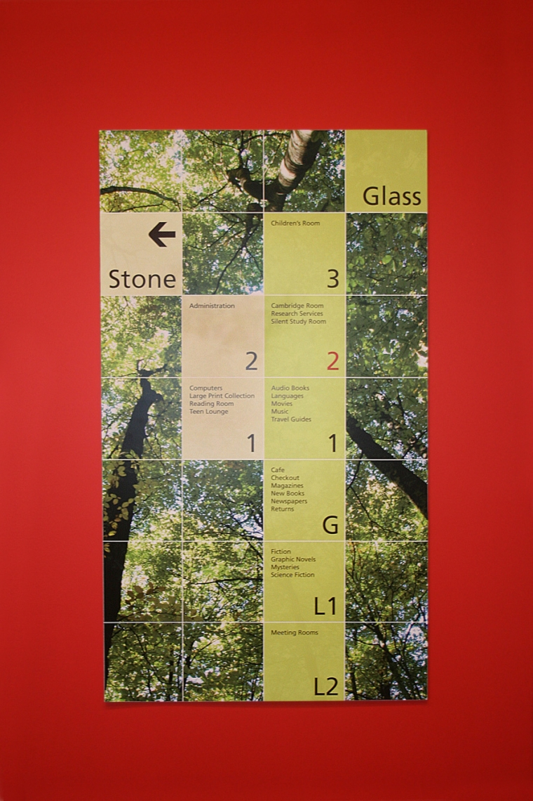
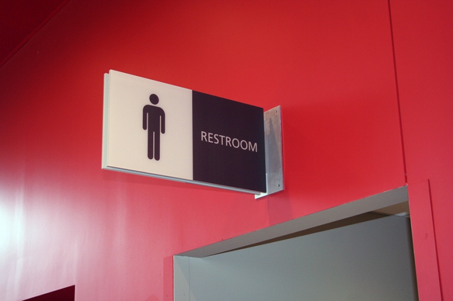

This is for the Cambridge Public Library renovated modern wing. I worked as a project designer with the principal design to create designs and draft the art work sent to the fabricators. This work included all visable signage for room, directional signs, elevators, bathrooms, and the large display banners you see below. This also included some exterior signage for the building, garage and the lawn.

Reverse channel letters on canopy.

Large hanging signs in the hallway that separates the original library and the recently created modern section.

Medium hanging signs on the second floor, top of main stairs.

Large sign going up stairway.

First floor directory

Bathroom Sign

Garage entrance
Work done at wojchehowski
Last edited